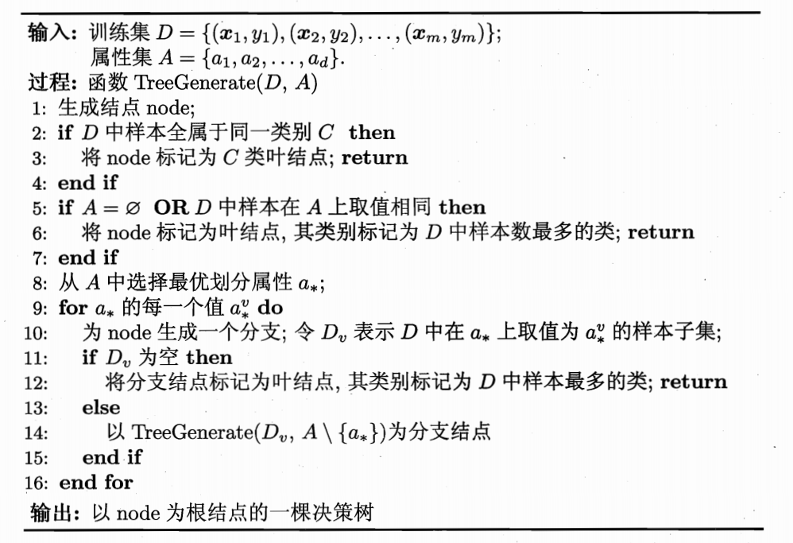
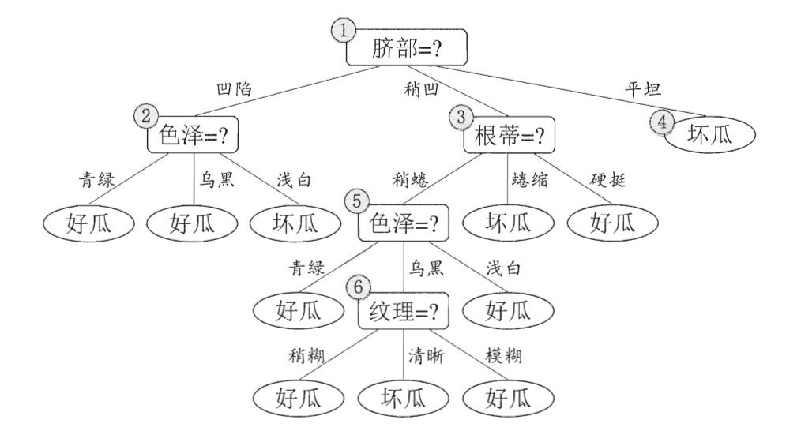
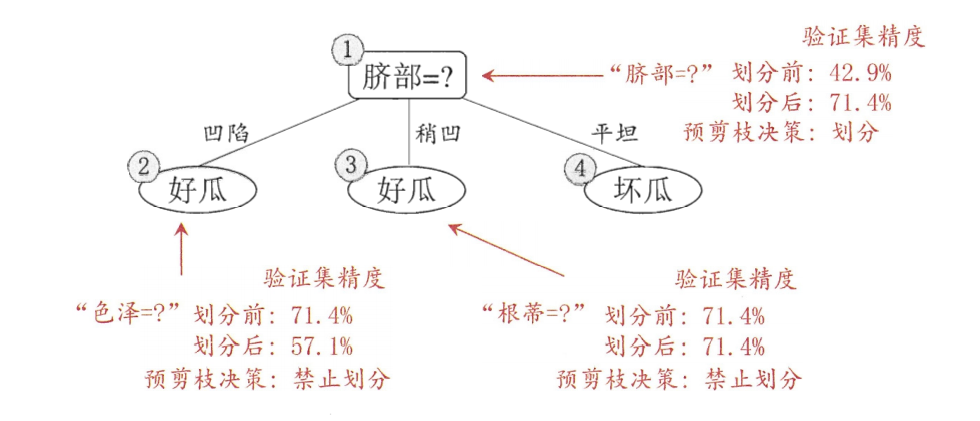
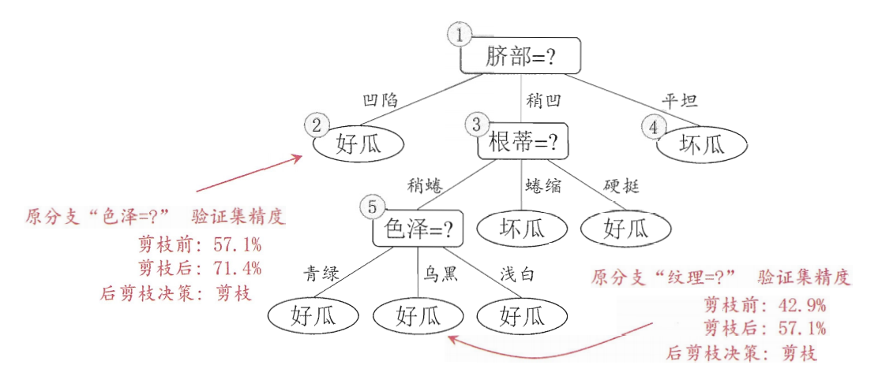

西瓜书决策树
第四章，决策树
基本流程
决策树处理分类问题，其学习目的就是产生一个泛化能力强，即处理未见示例能力强的决策树。算法流程如下图所示：
其中在三类情况下会return，即不继续划分：
- D中样本都属于一个类别，直接将这个类别作为节点类别，不需要划分
- A属性集为空或者D样本在属性集中无区别，也就是D的样本无法从属性数据中看出其类别区分，因此这里直接将他们中数量最多的样本的类别作为这个节点的类别，这是利用了一个后验分布
- 当选取的子样本集为空时，其节点类别直接使用父节点中数量最多的样本的类别，这里利用的先验分布
对于这个算法图，不是很理解其中for循环中的内容，目前的感觉是找到一个区分度比较高的属性，根据这个属性值对大样本做一个子集划分，然后将每个子集递归拿进去继续划分（此时就可以去除掉这个属性，因为每个子集中样本的这个属性值都是相等的），写到这里，感觉我又懂了。😄
划分选择
划分选择就是对应上面代码的第8行，选择最优划分属性。
信息增益
“信息熵”是度量样本集合纯度最常用的指标，同时我们希望决策树的最终节点的划分能够越纯越好，其表达式为：
$$
Ent(D) = - \sum_{k=1}^{|y|}p_klog_2P_k
$$
其中$p_k$代表集合D中第k类样本所占比例，这里$Ent(D)$值越小，纯度越高。
可以看到在第8行代码中我们要选择一个能够很好划分D的属性a，但这里的判断依据应当是什么呢？既然有了纯度的检验概念，我们可以将纯度越高作为我们的判断依据，那就可以去比较用不同的属性来划分后，纯度的增加最大的那个，用$Gain(D,a)$表示纯度增加，专业点说是“信息增益”，那么我们的优化目标就是：$a_* = arg max Gain(D,a)$，如何计算这个变化值$Gain(D,a)$呢？
在我们对一个D依照a做划分后，需要对每个节点分配不同的权重，很直接的选择是按照这个划分的样本数量安排权重，$Garin$表达式呼之欲出：
$$
Gain(D,a) = Ent(D)-\sum_{v=1}^V \frac {|D^v|}{|D|} Ent(D^v)
$$
增益率
使用信息增益的缺点是偏向于可取值数目多的属性（直观理解就是它的纯度很高，如变化这种唯一性的），为平衡这一点提出了一个“增益率”：
$$
Gain_ratio(D,a) = \frac {Gain(D,a)}{IV(a)}
$$
$$
IV(a) = - \sum_{v=1}^V \frac {|D^v|}{|D|}log_2 \frac {|D^v|}{|D|}
$$
增益率对可取值数目较少的属性有所偏好[1]。他们容易反复横跳，因此最后采用的是一个启发式：从候选划分属性中找到信息增益高于平均水平的属性，再从中选择增益率最高的。
基尼指数
$$
Gini(D) = 1- \sum_{k=1}^{|y|}p_k^2
$$
表示的是从D中随机抽取两个样本，其类别标记不一样的概率。优化目标是：
$$
Gini_index(D,a) = \sum_{v=1}^V \frac {|D^v|}{|D|} Gini(D^v)
$$
最终需要的是：$a_* = arg min Gini_index(D,a)$
剪枝处理
剪枝处理是为了解决过拟合问题，目前有两种方式，其中后剪枝得到的树通常比预剪枝的欠拟合风险小，但因为是在整个树生成结束后剪枝，因此其复杂度更高。
预剪枝
是否剪枝的判断依据：在验证集中的正确率表现。缺陷是基于“贪心”，只看这一步的好坏，不管后面。下图分别为未剪枝和预剪枝示例。
 后剪枝
连续与缺失值
连续值处理
处理方法是连续属性离散化，最简单的是“二分法”，即对这个属性找到一个划分点$t$，然后去判断选择这个属性这个划分的条件下对整个模型的优化能力。如果这个样本关于这个连续属性的取值有n个，那么可以选择的划分点有n-1个，即排序后每两个点之间。进一步可以对信息增益表达式做修改：
$$
Gain(D,a) = max Gain(D,a,t) = max Ent(D)-\sum_{\lambda \in {-,+}} \frac {|D_t^\lambda|}{|D|}Ent(D_t^{\lambda})
$$
但区别于离散属性的另外的点还在于，连续属性后续还可以使用来划分。
缺失值处理
先把一些表达式给出来。
$\tilde D$：$D$中在属性$a$上没有缺失值的子集
$\tilde D^v$：若$a$有v个属性取值，则它表示取值为v的样本子集
$\tilde D^k$：$\tilde {D}$中的第k类样本子集
$\omega_x$：给每个样本赋予的权重
$$
\rho =\frac {\sum_{x \in \tilde D} \omega_x}{\sum_{x \in D} \omega_x}
$$
$$
\tilde p_k =\frac {\sum_{x \in \tilde D_k} \omega_x}{\sum_{x \in \tilde D} \omega_x}
$$
$$
\tilde r_v =\frac {\sum_{x \in \tilde D_v} \omega_x}{\sum_{x \in \tilde D} \omega_x}
$$
需要解决两个问题：
如何在属性值缺失的情况下进行划分属性选择；
重点在于“选择”，这里将会用$\rho$来减弱对缺失属性的选择可能，推广信息增益表达式为
$$
Gain(D,a) = \rho \times Gain(\tilde D,a)
$$给定划分属性，若样本在该属性上的值缺失，如何对样本进行划分；
重点在于“划分”，将缺失的样本的权重按照每个分类的比例，即$\tilde r_v$来分散到不同的节点中。
多变量决策树
习题
后续扩展
[1] 这里$IV(a)$表达式和之前的$Ent(D^v)$的不同之处，理解上比较绕
碎碎念
发现我的封面图很多都裂了，那就随便找些个填上，最近来不及搞这些细节了。图书馆好冷呀，心酸…💔